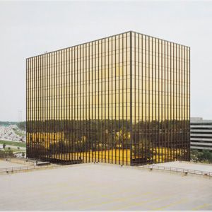

Aiden Olivier's Homepage, but cool

About Aiden
Yoooo, I'm a 3rd year UCSC film major. Mainly I do 3D modeling and animition, but also have an extensive background in vfx and visual design/concept art. Recently, I have been photoscanning a lot of objects and creating an large amount of usable low-mid poly assets with the details baked as texture maps. I am hyped for the day I can mesh NeRFs. I am incredibly new to coding but I really like problem solving. SO far it seems really fun and like something that I might continue after finishing this class.